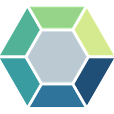

Diamantdiagnoser
Välj den diagnos som din lärare säger. Du får en uppgift i taget och ser inte om du svarat rätt förrän du är klar.
Ingen diagnos passar sökningen.
Mina resultat
Avbryta diagnosen? Svaren sparas inte.
Resultatet kunde inte sparas i det här fönstret.